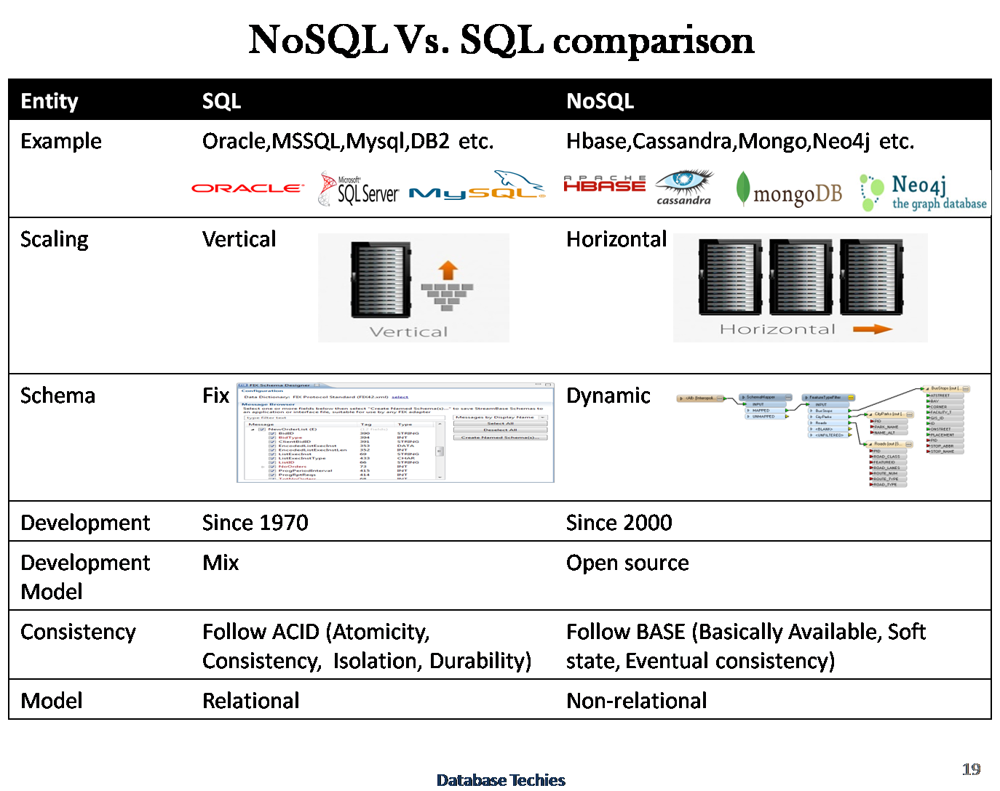

Node 3
What we will learn today?
- Recap
- Transfering files to server
- Saving data to file
- Persisting Data - Intro to DB
- Express Generator
- Middleware
Recap
What did we do last time? Do you remember anything from our AWS class?
Exercise
- clone Express workshop 3 project as a starting point for today
- replace the title heading with your name
- start the local server and check in the browser that it all works properly
- walk through the code, so we all understand what is in there
Exercise - AMI
- make sure you have access to the AWS keys
- spin up a server using Habiiba's AMI
- ssh to the server and verify that Node.js is installed
- go to the IP address in the browser
Transfering files to server
Exercise - ftp
- download FileZilla
- open FileZilla
- setup up a connection to EC2
- upload (maybe everything exept
node_modulesfolder and the runnpm installon server) - start the server with
npm start. Does it work? Why not? (Hint: what is the port?) - make small changes locally, upload and verify in the browser
Saving data to file
Exercise - save new post to file
We want to have an ability to create a new post when we go to /admin. When we click Send we want to add the new post to data/posts.json. Go!
- add
body-parserto the project - add the following lines inside the
server.jsapp.use(bodyParser.json()); app.use(bodyParser.urlencoded({ extended: true })); - go to
admin.handlebarsand change the type of button from submit to just button. Why? - add
id="addPostButton"to the button create a new JS file inside
jsfolder calledadd-post.jsvar addPostButton = document.querySelector('#addPostButton'); addPostButton.addEventListener('click', function() { const title = document.getElementById("title").value; const summary = document.getElementById("summary").value; const contents = document.getElementById("contents").value; // create data object const postData= { title: title, summary: summary, contents: contents } // AJAX var url = '/admin'; var oReq = new XMLHttpRequest(); oReq.addEventListener('load', onLoad); oReq.open('POST', url); //Send the proper header information along with the request oReq.setRequestHeader("Content-type", "application/json"); oReq.send(JSON.stringify(postData)); }); function onLoad() { // clear form document.getElementById("title").value = ""; document.getElementById("summary").value = ""; document.getElementById("contents").value = ""; // redirect to main page window.location.href = '/'; }- link the file inside the HTML code
add
postroute for/admin. This is where we going to process the form dataapp.post('/admin', function (req, res) { const filePath = __dirname + '/data/posts.json'; const cb = function(error, file) { // we call .toString() to turn the file buffer to a String const fileData = file.toString(); // we use JSON.parse to get an object out the String const postsJson = JSON.parse(fileData); // add new post to the file postsJson.push(req.body); // write back to file fs.writeFile(filePath, JSON.stringify(postsJson), (err) => { if (err) throw err; console.log('The file has been saved!'); }); res.end("Success."); }; fs.readFile(filePath, cb); });- push to server
Exercise - Handle "Page Not Found"
Try to navigate to a url that doesn't exist. What do you get? Open the Developer tools and check what status code do you get back.
app.use(function (req, res, next) {
res.status(404).render('404');
});
Persisting Data - Introduction to Databases
What is wrong with the solution above? Why is it not a good idea to save the data to the server's local file? What would happen if you restart the server, or kill it and spin up another one? Discuss.
Let's look at the AWS Database section. What types of data storage can you see? What are the main two groups?


Using DynamoDB with our Express app
What is AWS DynamoDB? What is the price? Where to find docs?
Watch the video Introduction to Amazon DynamoDB
If you have not finished the last exercise, here is the repo that you can use as a starting point: Express with saving
Use commit b1c85fb8cc97290e6eaef8971f5620b21c2b8e77
Exercise - Create table in DynamoDB
- login to the AWS console and create table DynamoDB. Problems? Why?
- create a table with a name: cyf-{username}-posts
- look at the structure of our posts in
posts.json. We will usetitleas primary key - add sort key and use
summary. ClickCreate - try to add an item to the table in the console. Use
Items->Create Item. How to addcontent? - try to add few more posts
Exercise - Read posts from DynamoDB
We want to change the code in our app inside the \ to read posts from DynamoDB. How do we do that?
We are going to use AWS SDK for this.
- run
npm install --save aws-sdk - load credentials - create in the root of the project a file called
config.jsonadd your access and secret keys{ "accessKeyId": "YOUR_ACCESS_KEY", "secretAccessKey": "YOUR_SECRET_KEY", "region": "eu-west-1", "endpoint": "https://dynamodb.eu-west-1.amazonaws.com" } add AWS to the project
// Load the SDK for JavaScript const AWS = require('aws-sdk'); // Load credentials and set region from JSON file AWS.config.loadFromPath('./config.json');now we need to change the route to the root of our project to get the data from Dynamo
app.get('/', function (req, res) { var docClient = new AWS.DynamoDB.DocumentClient(); var params = { TableName: "cyf-student-posts", ProjectionExpression: "title, summary, content", }; console.log("Scanning posts table."); docClient.scan(params, onScan); function onScan(err, data) { if (err) { console.error("Unable to scan the table. Error JSON:", JSON.stringify(err, null, 2)); } else { // print all the posts console.log("Scan succeeded."); // Here you can test how to access the posts, not needed for the functionality to work, so could be deleted data.Items.forEach(function(post) { console.log( post.title + ": ", post.summary, "- content:", post.content); }); res.render('index', { title: "Michael's profile", subheading: "A modern Website built in Node with Handlebars", posts: data.Items }); } } });
Discussion: do you think this is a good way to read the posts? If not, why not? How can it be done differently?
Exercise - Write posts to DynamoDB
If you have not finished, you can use the Express app and checkout the commit: 2e4722ac2828da8f6b00d9e63727e9116a08efbd
We now have to find a way to write our new posts from the app to the DynamoDB. How can we do that? What needs to be changed?
- we need to change the POST behaviour to the
/adminendpoint - remove the code from this route and just add
console.log(req.body). Try it out add to the route ```js app.post('/admin', function (req, res) {
// Create the DynamoDB service object var docClient = new AWS.DynamoDB.DocumentClient();
var params = {
TableName: 'cyf-student-posts', Item:{ 'title' : req.body.title, 'summary' : req.body.summary, 'content' : req.body.contents, }};
// Call DynamoDB to add the item to the table console.log("Adding a new item..."); docClient.put(params, function(err, data) {
if (err) { console.error("Unable to add item. Error JSON:", JSON.stringify(err, null, 2)); } else { console.log("Added item:", JSON.stringify(data, null, 2)); }});
});
1. change `add-posts.js` behaviour to redirect to the main page, since we don't really wait for any reply from the server
# Express Generator
Link to the tutorial https://expressjs.com/en/starter/generator.html
# Middleware
Middleware functions are functions that have access to the request object, `req`, the response object, `res`, and the next middleware function in the application’s request-response cycle. The next middleware function is commonly denoted by a variable named `next`.
Middleware functions can perform the following tasks:
- Execute any code
- Make changes to the request and the response objects
- End the request-response cycle
- Call the next middleware function in the stack
> **Exercise**: We've already used one built-in middleware in our app - what was it?
## Setup an error handler
You define error-handling middleware in the same way as other middleware, except with four arguments instead of three; specifically with the signature (err, req, res, next):
```js
app.use(function (err, req, res, next) {
console.error(err.stack)
res.status(500).send('Something broke!')
})
Let's write a custom middleware
var myLogger = function (req, res, next) {
console.log('LOGGED')
next()
}
app.use(myLogger)
Exercise: Follow the tutorial for writing
requestTimeat https://expressjs.com/en/guide/writing-middleware.html and add it to your own application
Homework
You can use this as a starting point - https://github.com/Michael-Antczak/Express-workshop-3
- Exercise - Handle "Page Not Found"
- Walk through the code again and make sure you understand what it does
- if you have time you can try to expand on the My CV project that we worked on today: a) sort posts alphabetically b) when the new post is added to the database, send an email to yourself about that (edited)